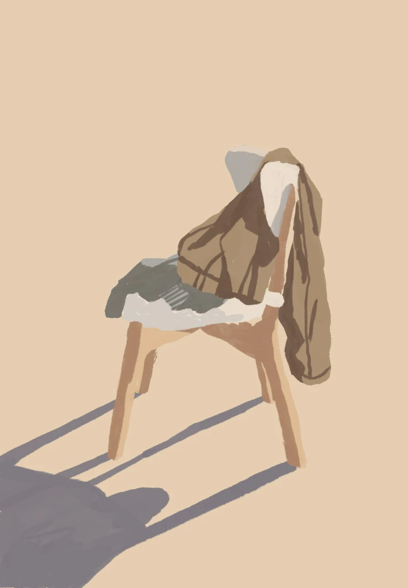

A chair
☀︎
I am using this space to sporadically explore HTML, CSS, and digital accessibility. It will probably work like a chair where you put all your clothes when unsure about their short-term reusability.
Images
The previous image uses the WebP format—considerably smaller (27 KB) than PNG or JPEG. Despite its size, it retains most of its quality: no need to have multiple images for different viewports and resolutions.
These days I am immersing myself in videos, articles, and posts about typography and layout: what to do or not to do and why. There are so many contradictory perspectives… I would like to slowly distill resilient guidelines for the growth of this site.
Nodes:
- User control
- Grids, eventually
- Accessibility guidelines
- Responsive; but how?
- Simplicity
- Unicode
- Print stylesheets